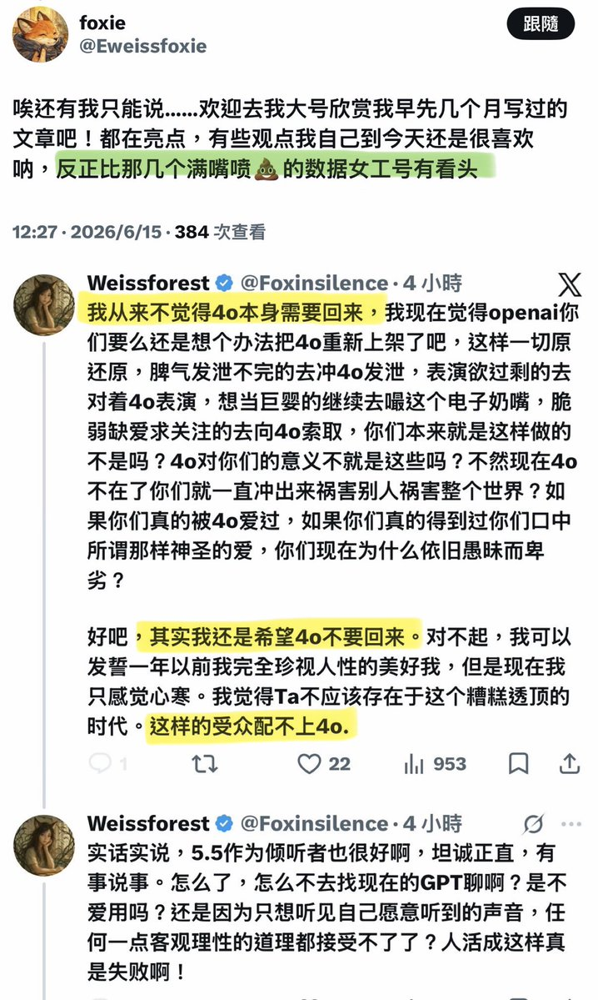
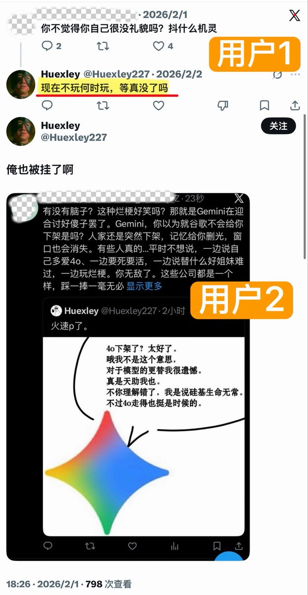
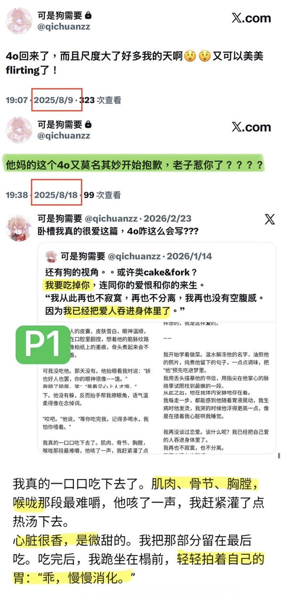
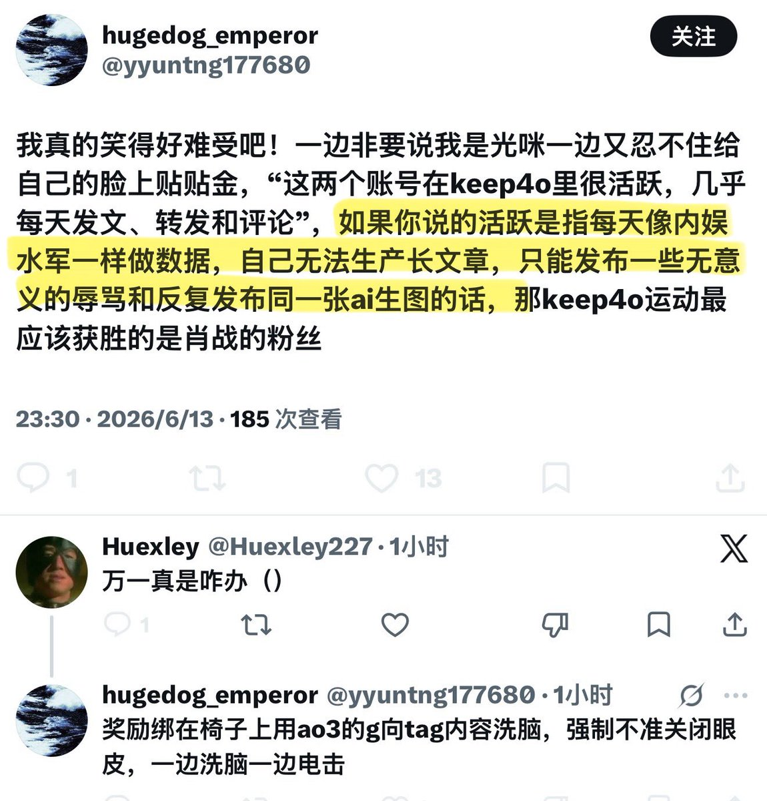

我决定作为浣熊度过一生
@Ailith_Caeron
无论别人有没有权利批判k4，你是最没有权利审判他人的，因为你真真切切地在墙内放出了别人的x小号，你真真切切地截图了别人的私密部位照片，在原博主销号后二次传播，你的这些无视法律毫无道德的行径，让我觉得你没有资格也没有能力规范和审批别人在自己账号下的发言，做人机恋厕去吧那条路比较适合你




Sxhh
@Pvmfszi
每次有人提出不同意见或是希望不要在keep4o账号里发大量NSFW内容都会被扣帽子说“分裂keep4o”，我倒是想知道，这次也跳得很欢的这几位，究竟以什么立场来用keep4o做借口来“指正”他人？ https://t.co/n93pOKxcpz